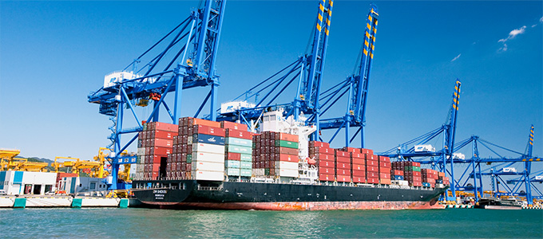

系统化的高速复合交通网
- Home
- 投资优势
- 系统化的高速复合交通网
系统化的高速复合交通网
通过大田高速公路、铁路、港口等核心基础设施，与首都圈及全国各地完善地连接起来，从东北亚多座城市乘坐飞机2小时便可抵达，具有非常方便的交通环境。
-
 扩建、延伸高速公路
扩建、延伸高速公路- 建设东西高速公路(首尔-襄阳)：首尔-东洪川地段完工，东洪川-襄阳段2016年开
- 建设第2岭东高速公路(京畿光州-原州)：2016年开通
- 建设东海高速公路(三涉-束草)：2015年开通
-
扩建铁路网
- 东西高铁(首尔-春川)待建
- 京春线(首尔-春川)双轨地铁：2012年投入运营高速电动车(ITX青春)
- 中央线(德沼-原州)双轨地铁开通
- 原州-江陵段的双轨地铁2017年开通
- 东海中部线(浦项-三涉)：2019年开通(部分区间开通)
- 建设首都圈市郊铁路(首尔新村-涟川新碳-铁原大马里)
-
 扩建、延伸国道
扩建、延伸国道- 5号国道(原州-铁原)
- 7号国道(三涉-高城)
- 31号国道(宁越-杨口)
- 38号国道(堤川-东海)等12条路线
-
 航空：2018年襄阳国际机场运行计划
航空：2018年襄阳国际机场运行计划-
国际航线：16条航线(中国9条、日本1条、俄罗斯2条、台湾1条、越南3条)※中国：北京、杭州、哈尔滨等
※俄罗斯：海参威、哈巴罗夫斯克 -
国内航线：4条航线(济州、金海、仁川、金浦)※中国团体旅游(3名以上)无须满足从济州岛入境的条件，
也可享受15天的免签优待(2017年7月1日至2018年4月30日)。
-
-
航道
-
构筑东北亚旅游、物流网(航道)
- DBS邮轮轮渡航道：东海墨湖港~日本境港、俄罗斯的海参威
- 束草-扎鲁比诺(俄罗斯)、珲春(中国)航道：束草~扎鲁比诺、
珲春，扎鲁比诺~俄罗斯海参威
-
新航道开设计划
- 东海、墨湖港：东海~日本骏河
- 束草港：束草~日本北九州
-